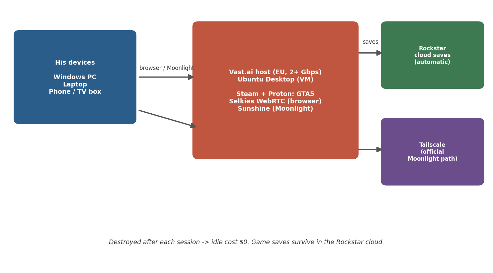
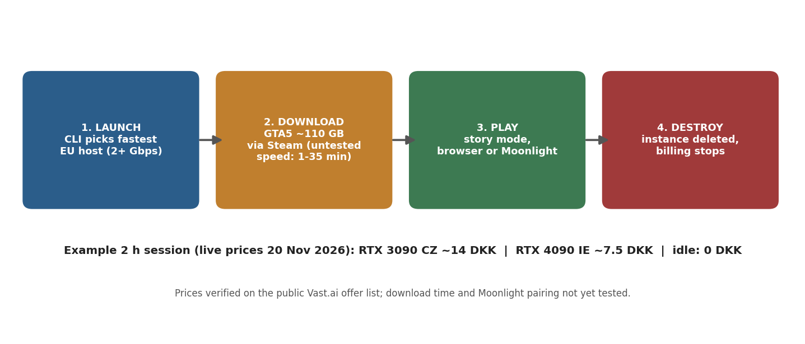
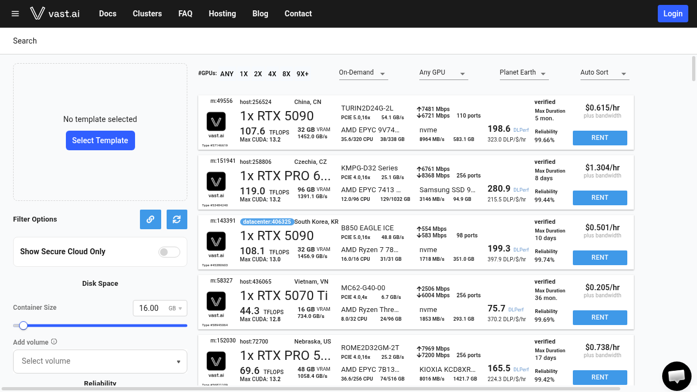

Cloud gaming, game by game: renting your own GPU vs the official services
I wanted to play modern games without owning a gaming PC. There are two routes: rent a datacenter GPU by the hour and stream the picture to a device I already have, or use an official cloud gaming service. With my AI assistant I checked both routes for the four games I actually want to play - GTA5, Fortnite, Call of Duty: Warzone and PUBG - against official documentation and live prices on 20 November 2026. The answer turns out to be different per game.
NOT YET TESTED END-TO-END Every claim is verified against official sources, but the rented-GPU flow itself is untested. Untested parts carry a yellow badge. No accounts were created and no money was spent for this article.
The short answer
| Game | Rented GPU (Vast.ai) | Xbox Cloud Gaming | GeForce NOW |
|---|---|---|---|
| GTA5 | YES - story mode only, ~7.5-14 DKK per 2 h session | NO - left Game Pass 15 Apr 2026 | NO - Rockstar pulled its games in 2019 |
| Fortnite | NO | YES - free, no Game Pass, just a browser | YES - free tier |
| Warzone | NO | YES - needs paid Game Pass (Essential/Premium/Ultimate) | YES - free tier works (game is free) |
| PUBG | NO | NO | NO - only PlayStation cloud (PS5/Portal) or a Shadow cloud PC |
Sources: Vast.ai docs, Epic Games help, Xbox Wire, xbox.com/play, NVIDIA, ProtonDB, VMDB, clouddosage.com, cloudplay.now. All checked 20 November 2026.
Why three of four games refuse a rented GPU
The wall is kernel-level anti-cheat. Fortnite (Easy Anti-Cheat), PUBG (BattlEye) and Warzone (RICOCHET) all run drivers in the operating system kernel that check two things: that the OS is Windows, and that the machine is a real PC rather than a virtual machine. This blocks the rented-GPU route twice over.
- No Linux: GPU rental services like Vast.ai are Linux-only. Anti-cheat vendors technically support Linux/Proton since 2021, but Epic, Krafton and Activision have each chosen not to enable it for these games. ProtonDB lists PUBG as Unsupported and Warzone as broken; Fortnite cannot start at all.
- No VMs: even where a Windows VM is available, the anti-cheat detects it and refuses to launch (Cannot run under Virtual Machine). VMDB shows 4/4 community VM reports for Fortnite as Borked, and cloud-PC providers list Call of Duty as not working.
Bypassing these checks violates the publishers' terms and risks a permanent account ban, so I did not try. GTA5 story mode is the exception: single-player games have no kernel anti-cheat, so GTA5 runs under Proton. GTA Online is still impossible (BattlEye since September 2024).
The one that works: GTA5 story mode on a rented GPU
The recipe: rent an RTX 3090/4090 in Europe with a 2+ Gbps connection on Vast.ai, using their official Ubuntu Desktop (VM) template, which comes with Steam (with Proton) and the Sunshine streamer preinstalled. Play in a browser (Selkies WebRTC, zero setup) or with the Moonlight client over Tailscale (best quality). When done, destroy the machine: idle cost drops to 0 DKK, and Rockstar's official cloud saves keep the progress.

Live data from the public offer list, 20 Nov 2026: 40 EU offers at 2 Gbps or faster for RTX 3090/4090/5090-class cards. Examples:
| GPU | Location | Speed | $/hr | 110 GB re-download | ~2 h session |
|---|---|---|---|---|---|
| RTX 4090 | Ireland | 15.6 Gbps | 0.535 | ~$0 (free bandwidth host) | ~7.5 DKK |
| RTX 3090 | Czechia | 15.5 Gbps | 0.369 | ~$1.29 | ~14 DKK |
| RTX 5090 | Czechia | 16.7 Gbps | 1.161 | ~$1.32 | ~17 DKK |


UNTESTED Real Steam download speed to these hosts, actual play latency and the Moonlight pairing are all unverified until the first session. One script placeholder remains: the exact template image ID, copied from the console on first run.
Free competitive games that work on the rented GPU
The rented-GPU route is not only for single-player. These free competitive games run on Linux, with no kernel anti-cheat blocking the way (verified on ProtonDB, 20 Nov 2026):
| Game | Linux status | Anti-cheat | Install | Download @ 2+ Gbps |
|---|---|---|---|---|
| Counter-Strike 2 | Native | VAC (Valve, works native) | 70.7 GB | ~5-19 min |
| Dota 2 | Native | VAC (play native, not Proton) | 85.1 GB | ~6-23 min |
| THE FINALS | Proton "Playable" | EAC with Linux enabled | 92.7 GB | ~6-25 min |
| Team Fortress 2 | Native | VAC | 31.8 GB | ~2-9 min |
| Overwatch 2 | Proton "Playable", fiddly | None kernel-level; Battle.net launcher | 98.0 GB | ~7-26 min |
Install sizes from SteamPeaks (19 Nov 2026). Download times: theoretical at 2 Gbps, realistic Steam CDN at roughly half. The excluded counterexample: Apex Legends, blocked after EA switched off EAC Linux support.
My pick for the first test: Counter-Strike 2. Fully native (no Proton layer), Valve's own anti-cheat with no VM blocking on record, the biggest competitive scene here, and a moderate download. UNTESTED
Playing from the couch: Moonlight on a jailbroken PS4
Since the stream is just a Moonlight session, any Moonlight client works - including a jailbroken PS4. There is one unofficial open-source client: Moonlight-ps4 (github.com/JaimeJimenezG/Moonlight-ps4), built for GoldHEN with the OpenOrbis toolchain. Current v1.1.0 (Aug 2026) claims pairing, 1080p60 H.264 with hardware decode, Opus audio, an on-console menu, and DualShock 4 input. Keyboard/mouse is on the TODO list; third-party Bluetooth controllers are a PS4 system limitation.
Honest caveats: it is a young single-author project, validated only on firmware 9.00 (the CUH model number does not matter; the GoldHEN firmware does), and its open issues include a "does not connect" report from November 2026. UNTESTED
Billing and money safety (Vast.ai)
From docs.vast.ai/billing and the FAQ: prepaid credits (card via Stripe, or BitPay / Crypto.com), per-second billing while an instance runs, storage billed while it exists. At $0 balance instances are auto-stopped and later deleted. No refunds on spent credits; unspent credits are refundable via the website chat (Coinbase Commerce crypto excepted). A saved card can be auto-charged if the balance goes negative. The docs state no minimum top-up; the community figure is ~$5. UNVERIFIED
Bottom line
Rent your own GPU for the games that allow it - today that means single-player titles like GTA5 story mode, at roughly 7.5-14 DKK per evening, plus free competitive games like Counter-Strike 2. For Fortnite and Warzone, the official free cloud tiers (Xbox Cloud for Fortnite, GeForce NOW for both) cost nothing and need no setup. PUBG has no good cloud route on this side of a PlayStation.
Next step: the first real session with measured download time and actual numbers, then this article gets updated with what worked and what did not.
Back to the blog